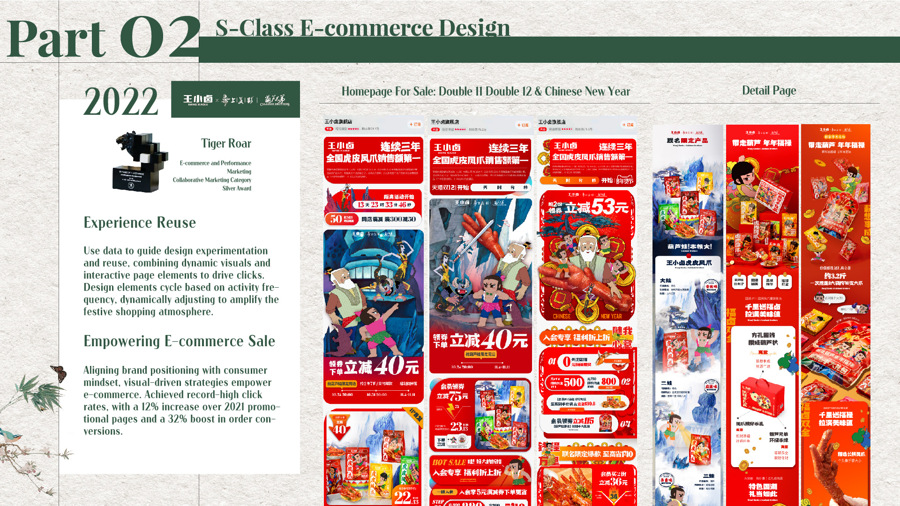
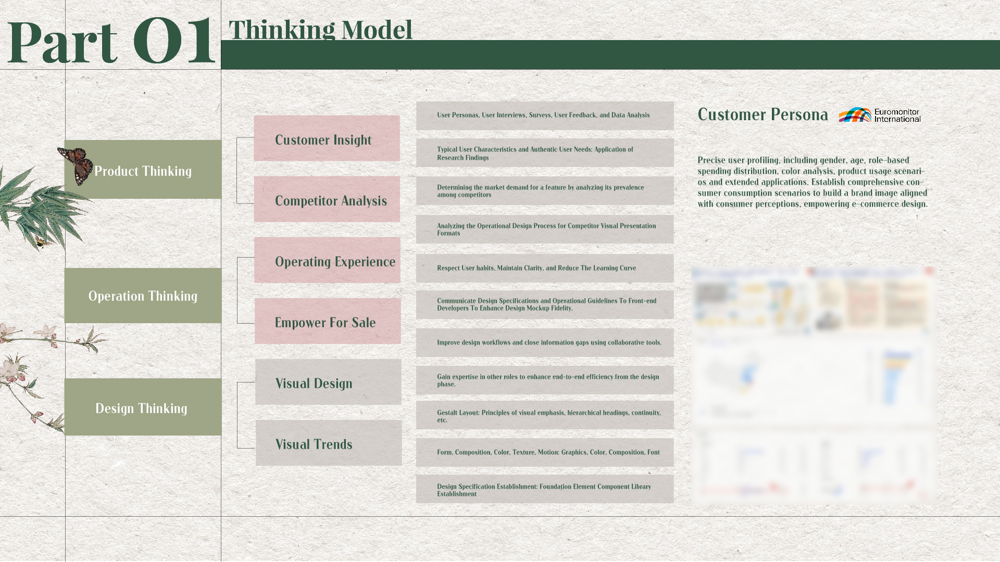
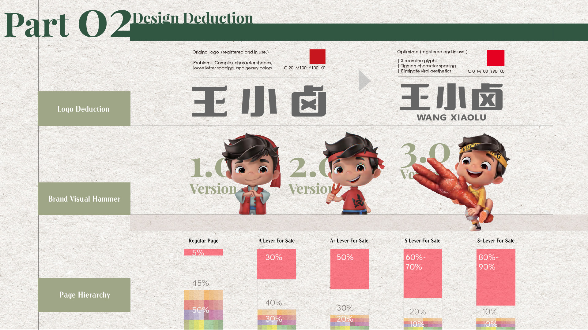

Wang Xiaolu × Shanghai Animation Film Studio
A cultural classic, reimagined for the shopping moment.

Wang Xiaolu × Shanghai Animation Film Studio

Overview
I led the creative strategy and visual integration for a licensed-IP campaign that brought Wang Xiaolu’s flexible 3D identity together with the traditional Calabash Brothers system. The work translated customer insight, motion and promotional clarity into a connected launch across packaging, e-commerce and social content.
The challenge
Campaign performance was already mature and difficult to improve. The brands had conflicting visual languages, while licensing and production imposed clear constraints. The challenge was not simply to place two characters together, but to create one compelling commercial world without compromising either identity.
Audience insight
The campaign needed to speak to audiences who remembered the original animation as well as younger urban shoppers seeking a contemporary cultural experience. Customers valued product quality yet remained price-sensitive, making the promotional proposition as important as the IP story.

Strategic decisions
Lighting, materials and rendering language were aligned to make the two character systems feel naturally co-present, without changing either character’s core identity.
Previous campaign learning informed the primary visual assets, with movement used to build attention and energy at high-traffic campaign moments.
Discounts and final prices were made immediate within the hierarchy, reducing purchase hesitation while keeping the IP experience intact.
Selected execution
The system was adapted across key visual, motion and social content, product-detail pages, packaging, five collaborative products and three gift sets. Rather than presenting every deliverable, the selected frames demonstrate how the strategic idea travelled across touchpoints.

Impact
The campaign met its New Year sales target. Here, “guiding conversion” refers to the rate at which the page experience moved visitors toward a purchase action.
Reflection
The campaign proved that a well-integrated IP system can create both cultural attention and commercial clarity. It also exposed the need for a stronger SOP when high-volume festival work needs to move across many teams and channels.